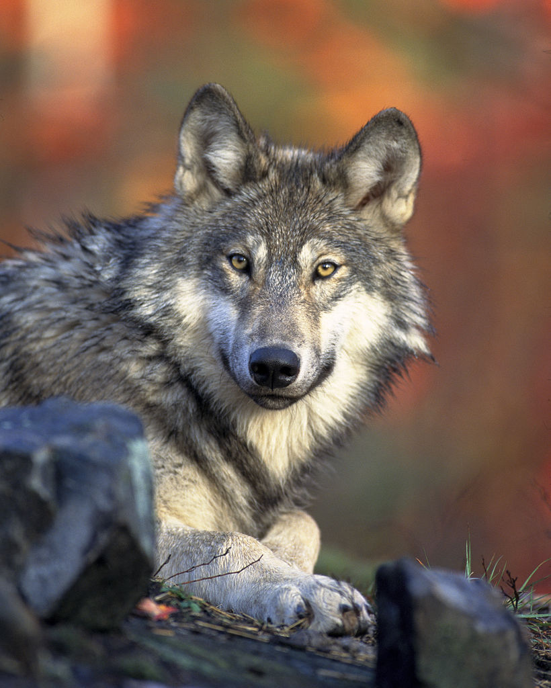
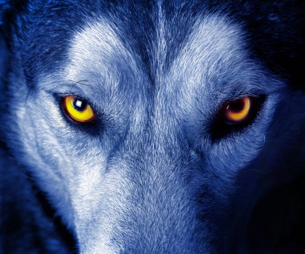

Lobo Cinza
da fammilia canis lupusÉ um sobrevivente da era do gelo , originario do pleistoceno superior, cerca de 300 mil anos atrs . o sequenciamento de DNA e estudos genéticos reafirmam que o lobo cinzento é ancestral do cão domestico.
É um sobrevivente da Era do gelo, originário do Pleistoceno Superior , cerca de 300 mil anos atras.[2]o sequenciamento de DNA e estudos.
O peso e tamanho dos lobos variam muito em todo o mundo, tendendo a aumentar proporcionalmente com a latitude ,como previsto pela teoria de Christian Bergmann. Em geral, a altura, media a apartir dos ombros, varia de 60 a 95 centimetros.L porem
"Há algo no vivar do lobo que tira um homem do aqui e agora e o transporta para uma floresta da mente".
- surgiu: 12.000 anos
- tipo: mamifero
- idade: media: 13 anos
- macho adulto: 80kg
- femea adulta: 55kg
- familia: Lupus
É um sobrevivente da Era do gelo, originário do Pleistoceno Superior , cerca de 300 mil anos atras.[2]o sequenciamento de DNA e estudos.
É um sobrevivente da Era do gelo, originário do Pleistoceno Superior, há cerca de 300 mil anos atras.[2]o sequenciamento de DNA e estudos.s